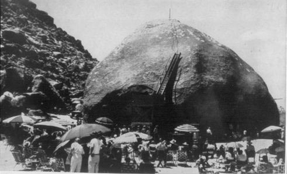

13ᵉ "Convention Annuelle des Vaisseaux Spatiaux" ce mois-là à Giant Rock (Californie)

À Giant Rock (Californie), la 13ᵉ Convention Annuelle des Vaisseaux Spatiaux réunit 5000
personnes.
À Mont Othrys (Grèce), le témoin
observe vers 18 h 30-19 h un OVNI circulaire et rouge, dont la vitesse ne dépasse pas celle d'un avion ordinaire. Sa
taille apparente est de 10 à 12 fois celle de la pleine
lune, à 5 000 m d'altitude. Il disparaît vers
l'ouest. D'après le livre de Sokratis Aikaterinidis, Exogiina onta stin Ellada (tome 1).
GRUFON y voit un ballon.Hellenic
UFO Database, Volume I, GRUFON,
, fiche GR_0424.
Observation à Osceola (Wisconsin)Cas Blue Book n° 10996 non résolu.
Intervention de James E. McDonald pour une étude objective et
publique des ovnis.
Suite à différentes pressions (l'opinion, Gerald Ford, Josef Allen Hynek,
Coleman VonKeviczky, McDonald) le projet Blue Book est examiné par un comité de
scientifiques qui propose de confier le travail d'une étude scientifique approfondie des ovnis à une université
américaine dont l'impartialité ne pourrait être mise en cause. Le Congrès approuve le projet et confie cette tâche à
la Commission Condon, au sein de l'université du
Colorado.
Le Hérisson du 20, titrant sur la création du projet Colorado : Les U.S.A. décident :
300000 $ pour élucider le mystère des soucoupes volantes. En encart, le loufoque côtoie le sérieux : La
princesse Negonnah et le prince Nœsam délégués de la planète Tythan au congrès des engins inconnus.
Lancement du 1er satellite Intelsat 2.
Observation à Cold Bay AFS (Alaska)Cas Blue Book n° 11092 non résolu.
Récupération d'un corps suite à un crash dans le nord-ouest de l'Arizona.